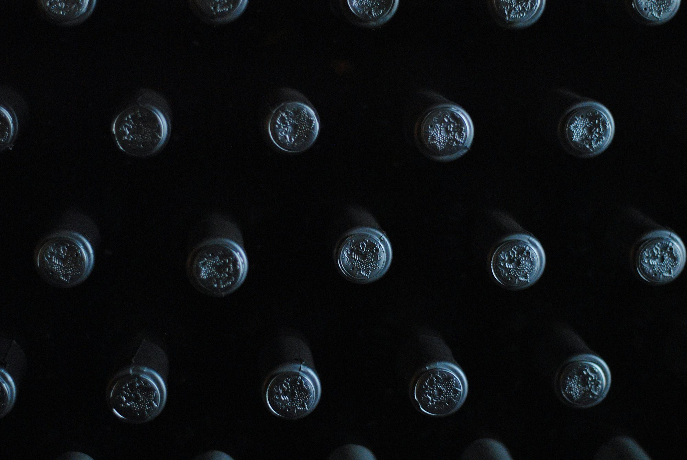
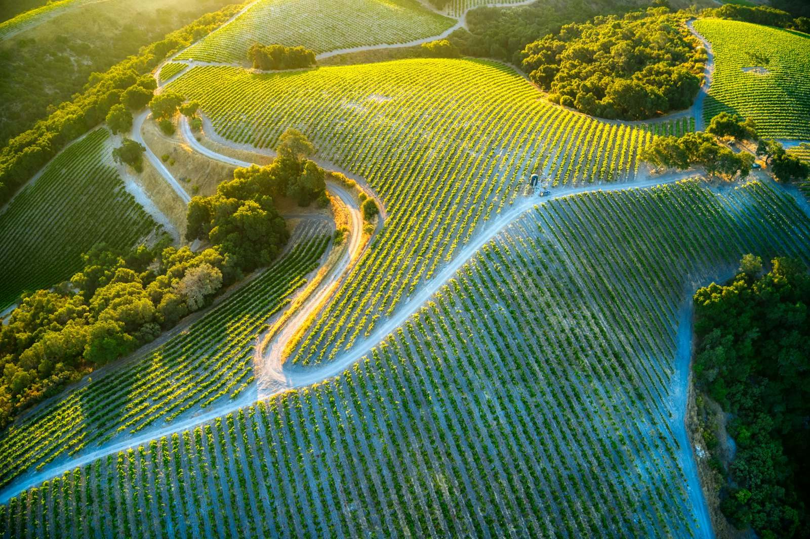
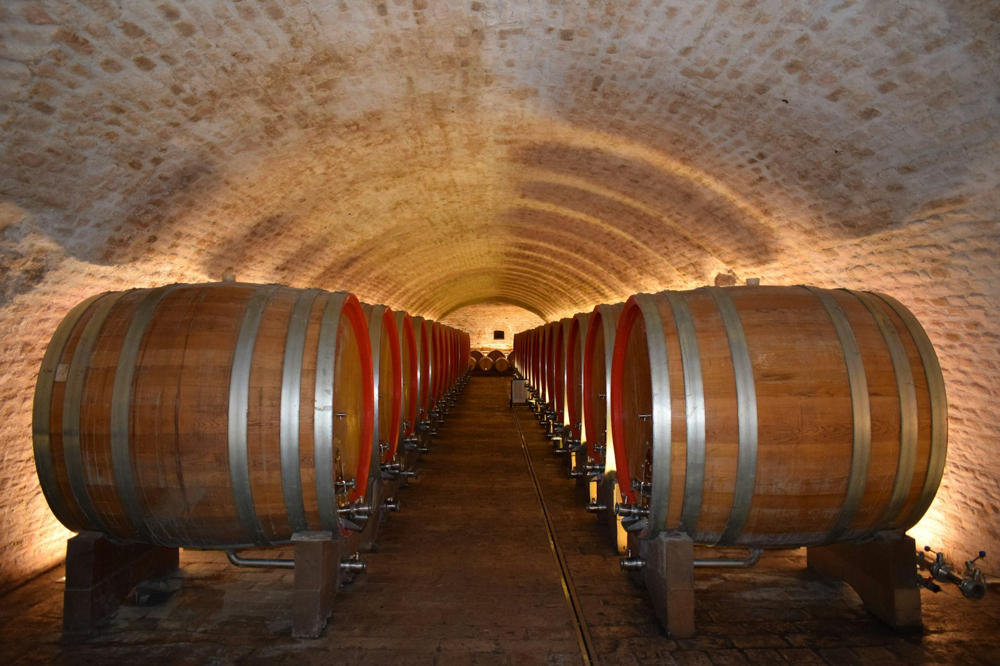
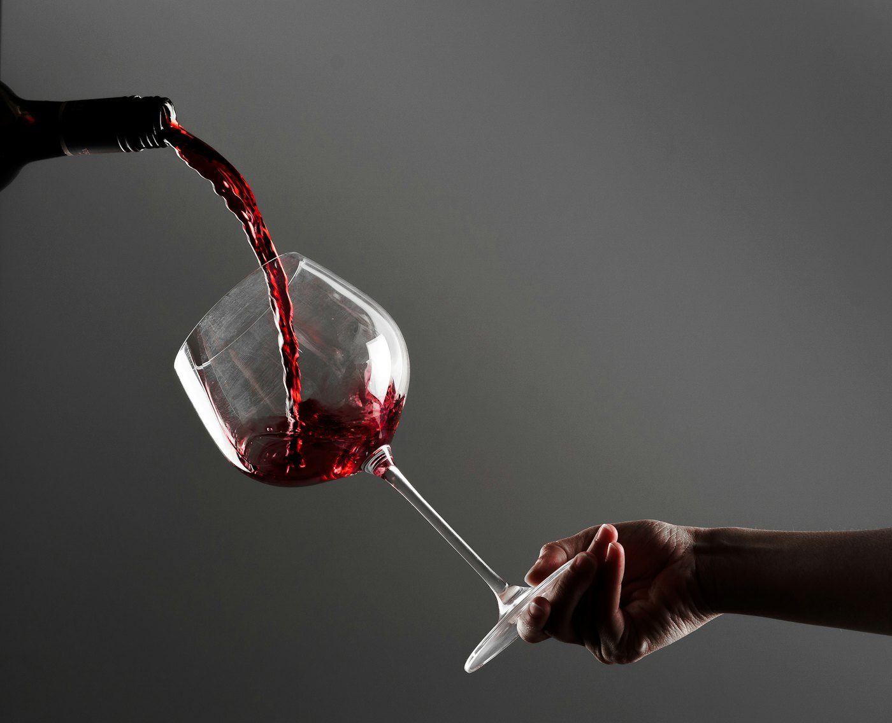
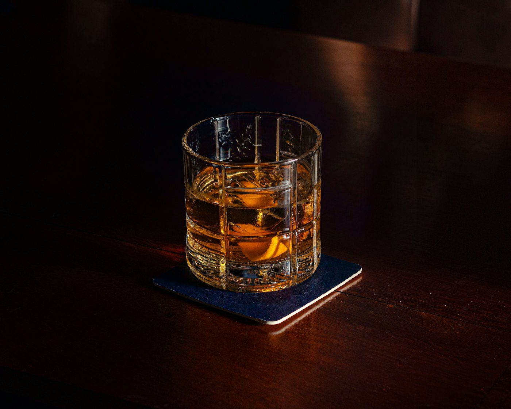
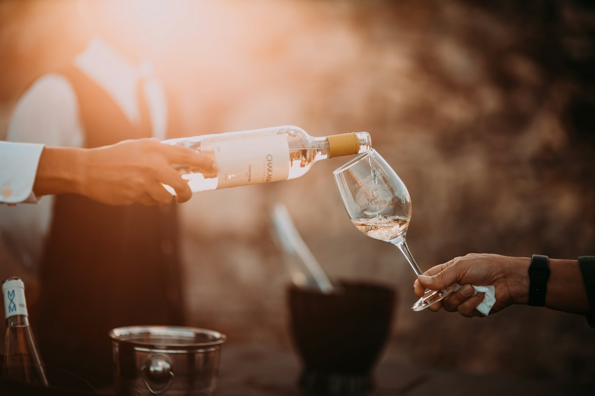
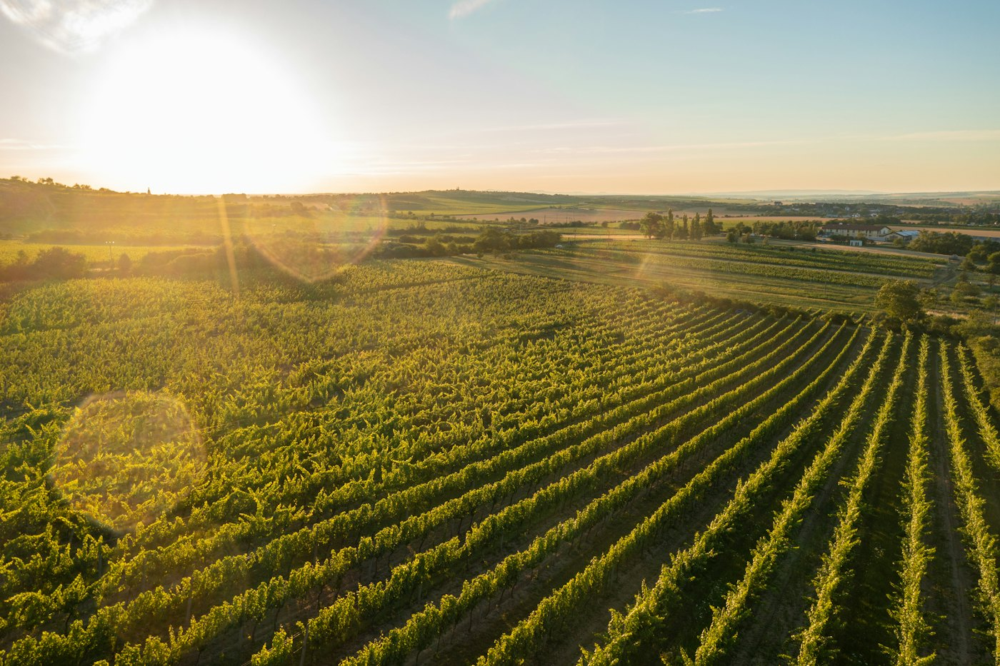
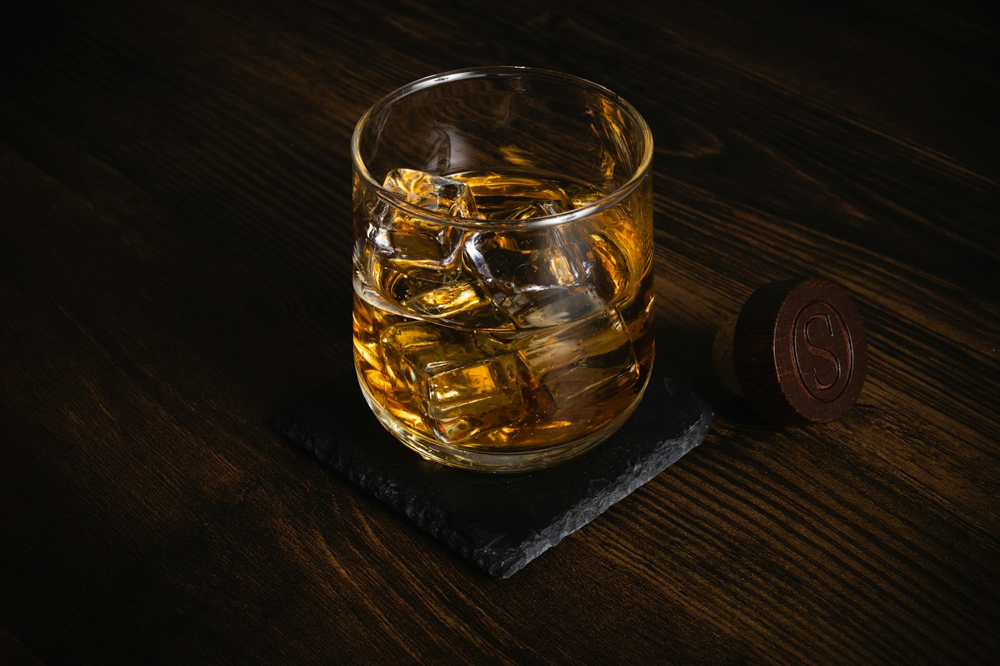
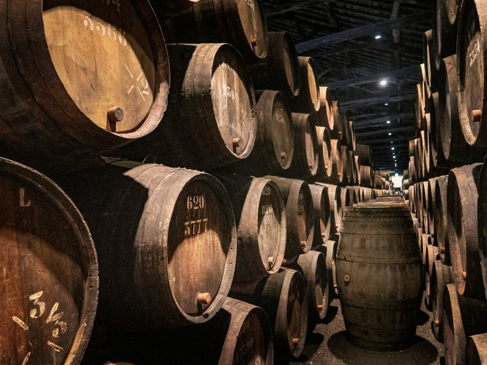
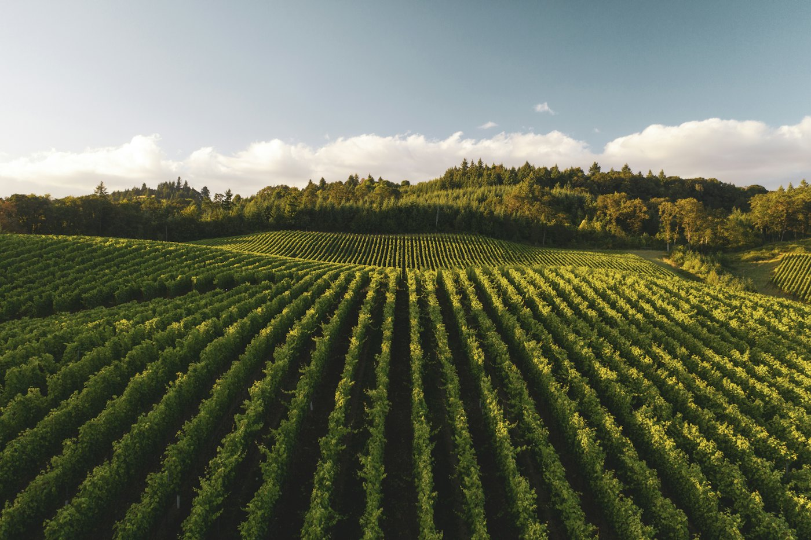

Dalla vigna all'alambicco.
Una famiglia, due mestieri: il vino della collina e i distillati fatti con le sue vinacce. Scorrete: la bottiglia vi racconta il resto.
Rosso Riserva.
Ventiquattro mesi in botte grande, un anno in bottiglia prima di uscire. Si apre con calma e si beve con il tempo.
Scheda tecnicaGrappa di vinacce.
Distillata a vapore in piccoli lotti, con le vinacce ancora fresche della stessa vendemmia. Riposa in legno di ciliegio.
Scheda tecnicaQuattro bottiglie, un territorio.
Ogni etichetta ha la sua scheda: profilo di degustazione, abbinamenti, scheda tecnica da scaricare per ristoratori e importatori.

Filari in collina, vendemmia a mano.
Qui entrano la vostra storia, le vostre vigne e i vostri numeri veri: ettari, altitudine, esposizione, anno di fondazione. Raccontati con le immagini della vostra vendemmia.
Il legno, il rame, il tempo.
Visite e degustazioni su prenotazione, anche in inglese e tedesco. La prenotazione arriva direttamente in calendario.



Degustazione classica
Quattro vini e una grappa, con taglieri del territorio. Circa un'ora e mezza.
Dalla botte al bicchiere
La cantina e la distilleria con chi ci lavora, assaggi direttamente dalle botti.
Per aziende e gruppi
Su misura, con cena in cantina e regali personalizzati per i clienti.
Listino e schede, in un clic.
- Listino HoReCa aggiornato su richiesta
- Schede tecniche in italiano, inglese e tedesco PDF
- Foto ad alta risoluzione per le carte dei vini cartella
- Campionature per importatori su richiesta
Professionale, moderna, orientata a vendere.
Stessa identità, stesse foto: chi vi scopre su Instagram trova sul sito la stessa cantina.
Prodotto, dietro le quinte, territorio, vendita: un calendario chiaro, approvato da voi prima di pubblicare.
Listino e schede scaricabili: le richieste da ristoratori e importatori arrivano già qualificate.
Visite in cantina con calendario e pagamento online: meno telefonate, più presenze.
Italiano, inglese e tedesco per turisti e mercati esteri.
Le confezioni regalo di Natale si vendono online dalla stessa pagina dell'etichetta.
Un sito e un profilo che si parlano.
La presenza digitale che chiedete: stessa voce, stesse immagini, un piano di pubblicazione. Ecco come potrebbe essere dicembre.

Reel

Reel

Dicembre 2026
Piano contenuti